|
|
|
By considering a volume V confined by a real close bounding area Σ, which is convex with no topological holes, with its sizes conceived so that this volume might be able to include all the system’s elements and only them (without alien elements). The surface Σ shall be the boundary between two complementary33 spaces - the internal one with volume V and the external one. Three flux classes may be defined by means of this surface Σ, and these are:
Fluxes , known as open input fluxes (immergent in V or afferent to V), which cross the surface Σ from the outside to the inside (convergent or import fluxes);
Fluxes , stored (closed) fluxes into the inner V volume of the system;
Fluxes 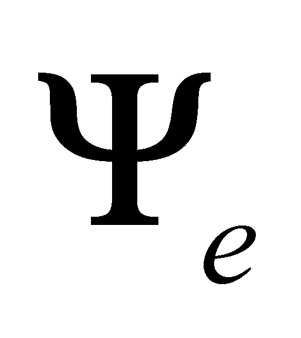, open output fluxes (emergent from V or efferent to V), which cross the surface Σ from the inside to the outside (divergent or export fluxes).
Comment 7.2.2.1: Although it is quite unpleasant and boring, the specification of all the denominations of the fluxes involved in the transfer by means of RBS is important for the start, because in certain papers, only some of these denominations are used, but since we are talking about a general model, these denominations which are specific to a certain professional domain, seem to be similar with the others from other domains. Until the “standardization” of a single denomination for each flux type, we have to mention all of them. The category of efferent fluxes shall also include, as we are about to see later on in this paper, the fluxes which are not coming from the inside of volume V, but from its surface (reflected fluxes); it is important that these reflected fluxes are also open, with their direction oriented outward of volume V just like the emergent fluxes, since they are output (divergent) fluxes as well. If the reader has knowledge regarding the vector fields theory, then he is able to instantly note that the two classes of input and output fluxes (more exactly, their normal components on RBS) shall have the divergence different from zero (positive or negative) and a null curl, whereas the coherent components of the stored fluxes with a non-zero circulation shall have a null divergence (through Σ) and a non-zero curl. In this way, the model of triad fluxes “makes a connection” between the two basic flux classes (the ones with a non-zero divergence and the ones with a non-zero curl) which seemed to have no connection until this moment.
The k-type attribute stock at a certain t moment and which is contained in a flux stored inside a MS is given by the following relation:
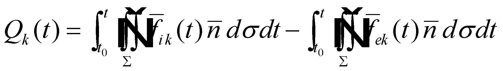 (7.2.2.1)
where 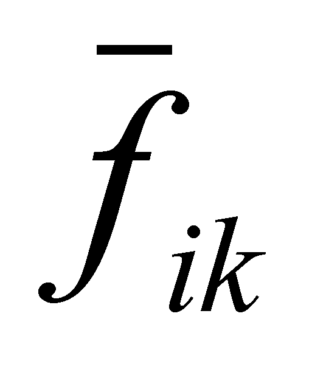 is FDV of the k-type input flux, and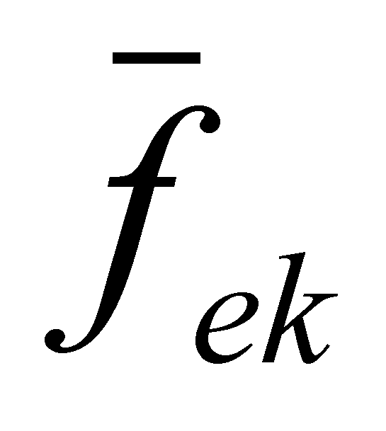of the output flux, namely, the inner stock of a certain attribute is the difference between “the history” of the affluxes and effluxes within the system, history which begins at the moment t0, the moment of the material system formation, which coincides with the occurrence (we call it “generation”) of the stored fluxes.
For a certain type of MS, there is a stored flux which contains a stock known as model stock Qkr, which is a reference stock of the k-type attribute (amount), against which the real flux stored at a specific moment may be lesser or higher. The difference:
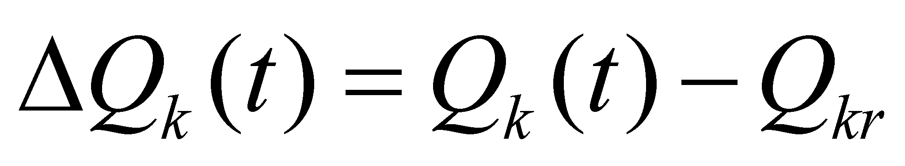 (7.2.2.2)
is the demand (necessary amount) of k-type flux, if the difference sign is negative (the stored flux is lesser than the model stock), and the excess (surplus) of k-type flux if the sign is positive.
Comment 7.2.2.2: For example, in case of humans, the water flux demand is manifested through the signal given by the inner IPS expressed by the sensation of thirst, with an intensity in proportion to the needed flux amount (demand); after the completion of this amount, the flux surplus is signaled by means of the satiety sensation. The same situation occurs in case of the oxygen, food demand, so on, only the signal given by inner IPS being different.
Causally speaking, the stored flux 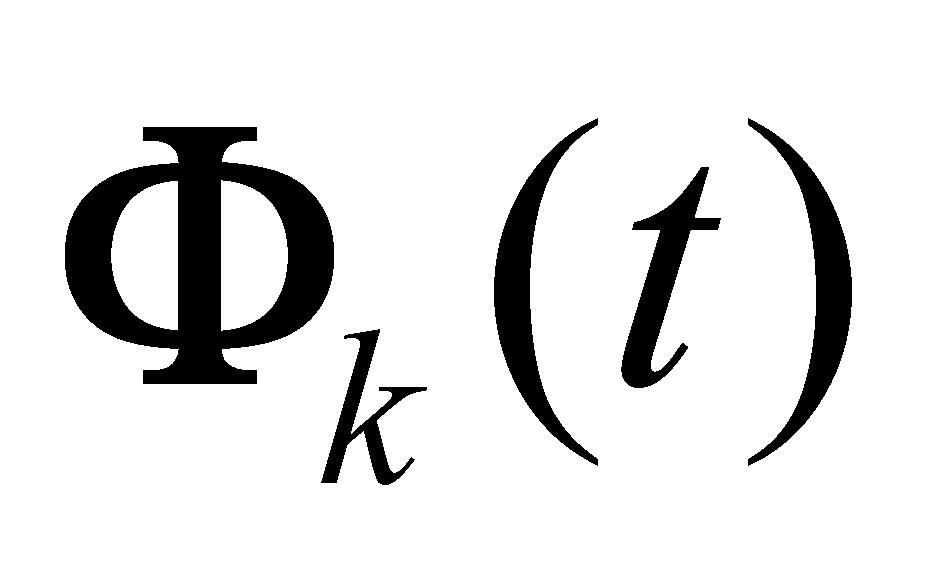34 (whose FDV is noted with 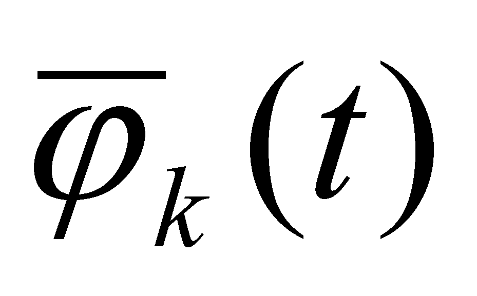) is the effect of the input flux accumulation 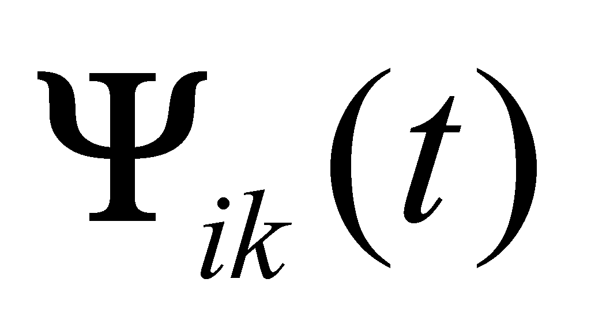, and the source (cause) of the output flux 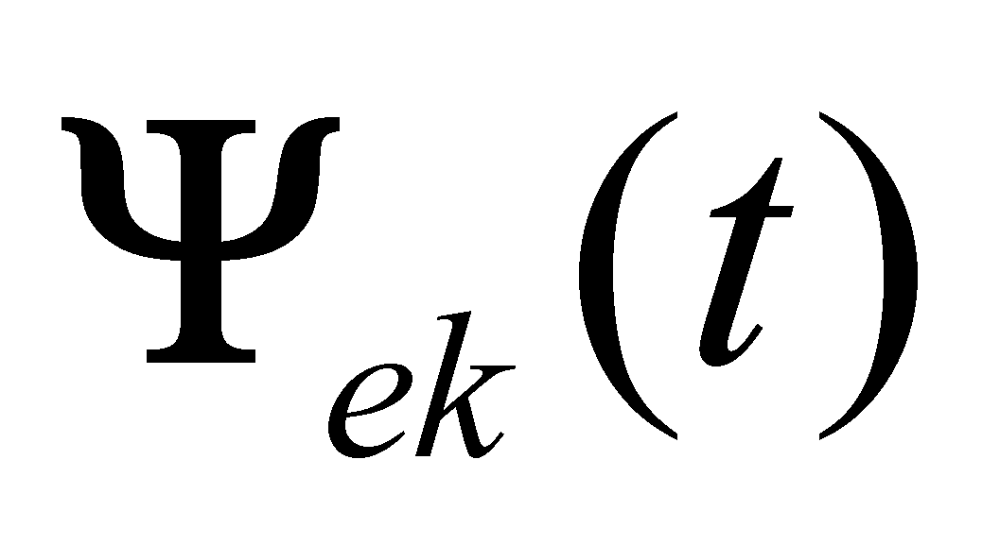.Between the fluxes which make-up a triad (under an equilibrium state, that is the stock maintenance of an inner attribute k equal to its model stock), there is a basic conservation relation:
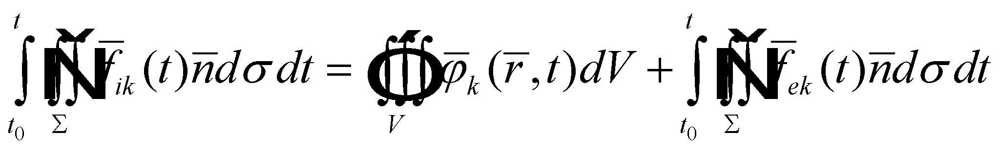 (7.2.2.3)
where t0 is, as I have mentioned above, the generation (formation) moment of MS, and t is the current (present) moment. The relation 7.2.2.3 stipulates that the attribute stock k which is contained in the inner flux (also a k-type) of MS at the present moment t, is given by the temporal integral of the influx intensity, minus the temporal integral of the efflux intensity, along the temporal existence interval of MS. Under the conditions of permanent equilibrium of the fluxes triad (that is the invariant maintenance of the inner stocks equal to the model ones), the relation 7.2.2.3 may be written in a simplified form:
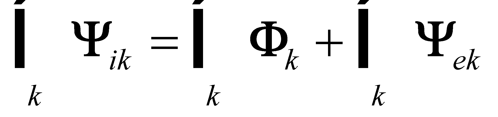 7.2.2.4)
where , 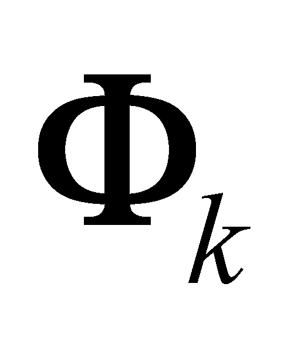 and 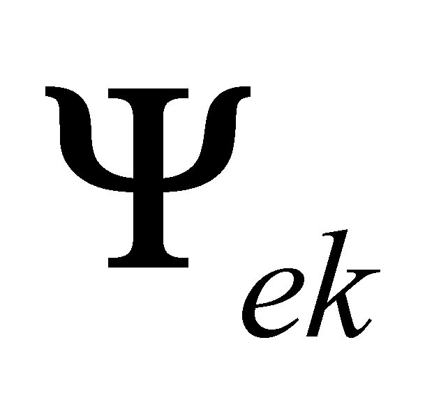 are Euler distributions of the input and output k-type fluxes at a certain t moment, distributions on the surface Σ in case of the input/output fluxes and on volume V in case of the stored fluxes.
The inner fluxes stored inside the system are the vital (functional) fluxes of MS, by which the newly arisen MS is different from the reference medium which has generated it (the medium which contains the generating set of the structural elements of MS). When these fluxes vanish, the system vanishes (dies) as well.
The common properties of all MS are the ones resulted from the general model of MS - the fluxes triad model (3F model). This model settles that any MS has a finite inner volume which is separated by the outside domain through a real bounding surface (RBS), which contains the closed fluxes of MS. RBS is crossed in its both directions by the other two flux categories of the model - input and output fluxes. The existence of fluxes as distributed motion processes determines the inseparable existence of a fundamental property of MS, which represents the motion - energy - and the existence of the stored fluxes (more exactly, of the contained stocks) is a major factor for other fundamental properties of MS - spatial structure and inertia. These fundamental properties shall be analyzed later on and, for the time being, we shall be dealing with RBS because it is very important that this concept to be understood.
33 In this case, the complementariness basis is the entire infinite Ω space (see Annex X.5 for details concerning the complementariness basis term).
34 It is clear that the fluxes which make-up the triad depend also on the spatial attribute (because the fluxes are distributions with a spatial-temporal support), but for simplifying the relations, we shall mark only the temporal dependence because time is a key-issue for the stocks evolution.
Copyright © 2006-2011 Aurel Rusu. All rights reserved.